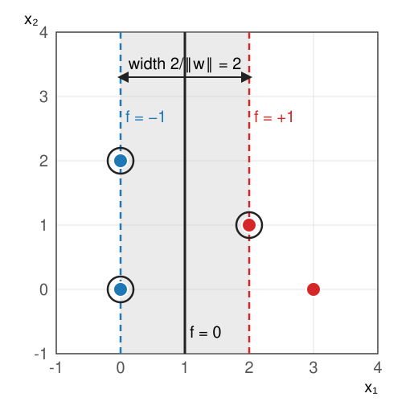
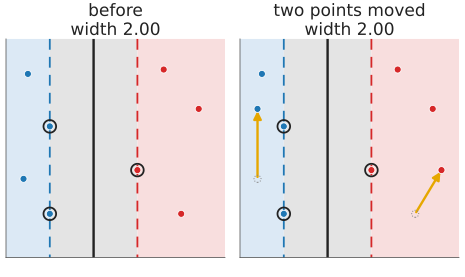
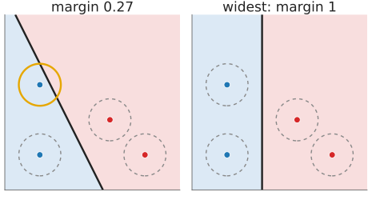
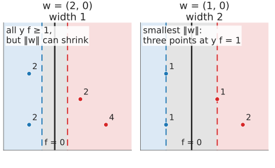
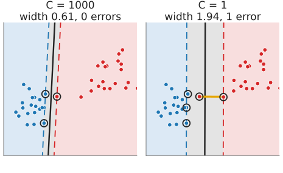
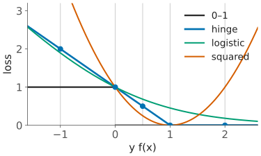

Last unit: many lines separate the training points. This unit picks one: the line with the widest empty street around it (Boser, Guyon & Vapnik, 1992; Cortes & Vapnik, 1995).
Slides titled The math give the formulas and proofs; the ideas are complete without them.
Builds on: Linear classifiers (previous unit); Day 33: Random forests.

Of all lines with zero training errors, take the one with the widest empty street around it: the line in the middle, the two edges through the closest points of each class.
The points on the edge of the street are the support vectors: here (0, 0), (0, 2) and (2, 1).

Ringed: support vectors. Moving two other points (arrows) leaves the street as it was.

Circles: each point may move by 0.6. Only the wide margin survives that.
Unit 1: (\mathbf w, b) and (c\mathbf w, cb) give the same line. Choose the scale so that the closest points have f = \pm 1:
Widest street = smallest \|\mathbf w\| such that all y_i f(\mathbf x_i) \ge 1.
Example: f = x_1 - 1, so \mathbf w = (1, 0), b = -1, width 2/1 = 2. Check: y\,f = 1, 1, 1, 2 for (0,0), (0,2), (2,1), (3,0).

Shrinking \|\mathbf w\| widens the band -1 \le f \le 1 until it touches the closest points.
The edges f = \pm 1 are at distance |{\pm 1}|/\|\mathbf w\| from f = 0 (unit 1’s distance formula), so the width is 2/\|\mathbf w\|. Maximising it is minimising \|\mathbf w\|, or more conveniently
\min_{\mathbf w, b}\ \tfrac12\|\mathbf w\|^2 \quad\text{subject to}\quad y_i(\mathbf w\cdot\mathbf x_i + b) \ge 1, \quad i = 1, \dots, n.
Most data cannot be separated, or only by a very narrow street dictated by one odd point.

The demo’s “one outlier”. Yellow: slack. Ringed: support vectors.
\min_{\mathbf w, b, \boldsymbol\xi}\ \tfrac12\|\mathbf w\|^2 + C\sum_i \xi_i \quad\text{subject to}\quad y_i f(\mathbf x_i) \ge 1 - \xi_i,\quad \xi_i \ge 0.
At the optimum each \xi_i is as small as allowed: \xi_i = \max(0, 1 - y_i f(\mathbf x_i)). Substituting gives an unconstrained problem:
\min_{\mathbf w, b}\ \tfrac12\|\mathbf w\|^2 + C\sum_i \max\big(0,\ 1 - y_i(\mathbf w\cdot\mathbf x_i + b)\big).
Write the margin value m = y\,f(\mathbf x): positive = correct side, \ge 1 = outside the street.
| loss | formula | |
|---|---|---|
| 0–1 | 1 if m \le 0, else 0 | what we care about; flat with a jump |
| hinge | \max(0,\ 1 - m) | 0 outside the street, grows linearly |
| logistic | \log_2(1 + e^{-m}) | never exactly 0; every point has a say |
| squared | (1 - m)^2 | also punishes points that are “too correct” |
Five points with y\,f = 2,\ 1,\ 0.5,\ 0,\ -1:
| y f | 2 | 1 | 0.5 | 0 | −1 | total |
|---|---|---|---|---|---|---|
| 0–1 | 0 | 0 | 0 | 1 | 1 | 2 |
| hinge | 0 | 0 | 0.5 | 1 | 2 | 3.5 |
| logistic | 0.18 | 0.45 | 0.68 | 1 | 1.90 | 4.21 |
| squared | 1 | 0 | 0.25 | 1 | 4 | 6.25 |
